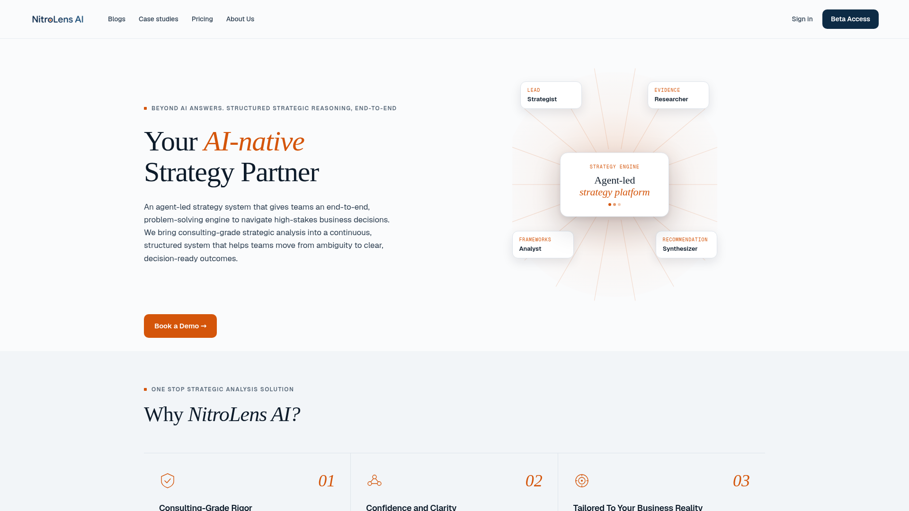
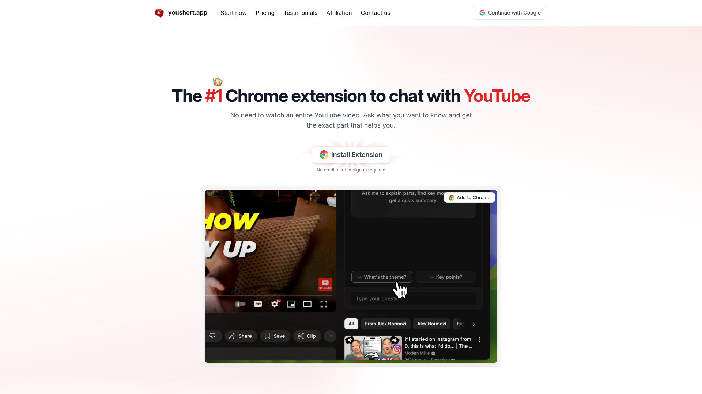

今日精选 · 5 个产品

NitroLens 是一个运行麦肯锡风格工作流的 AI 战略咨询代理。由前麦肯锡战略顾问和 Cisco 产品战略负责人打造，将传统咨询公司需要 10 万美元以上、耗时数月才能完成的战略分析，压缩为 AI 驱动的快速迭代流程。适用于中小型团队和中型企业，解决他们无法负担顶级咨询公司但又需要高质量战略分
Clippie Pro 是一款 Windows 桌面应用，使用 AI 自动将长视频和播客剪辑成适合社交媒体传播的病毒式短视频。独立开发者于 2026 年 4 月 6 日上线，目前已有 102 次浏览、6 笔订单、239.94 美元收入（一次性付费模式）。产品采用 AppSumo 终身授权模式销售。

Pezus 是一款专为家长设计的 AI 食品安全检测应用。用户只需拍一张食品照片，AI 即可基于营养学知识库分析食品成分，输出针对儿童的食用建议。开发者是一位焦虑的奶爸，因女儿吃布丁后过敏起疹子而萌生此想法，使用 ChatGPT 指导通过 Vibe Coding 开发完成。目前在 App Store

YouShort 是一款 Chrome 浏览器扩展，在 YouTube 视频旁边提供 AI 问答功能。用户输入问题后，AI 会回答问题并精确告诉你答案在视频中的具体时间位置。解决了「看 YouTube 教程时有疑问却要反复拖动进度条查找」的痛点。通过与 Instagram 页面合作推广，一周内获得
FastMoro AI 是一个整合了 Veo 3.1、Seedance 2.0、ChatGPT Image 2.0、Happy Horse 1.0 等主流 AI 模型的一站式视频和图像生成平台。用户无需切换多个平台或管理 API 配额，即可在一个界面完成文本转视频、图片转视频、参考视频生成、文本转图